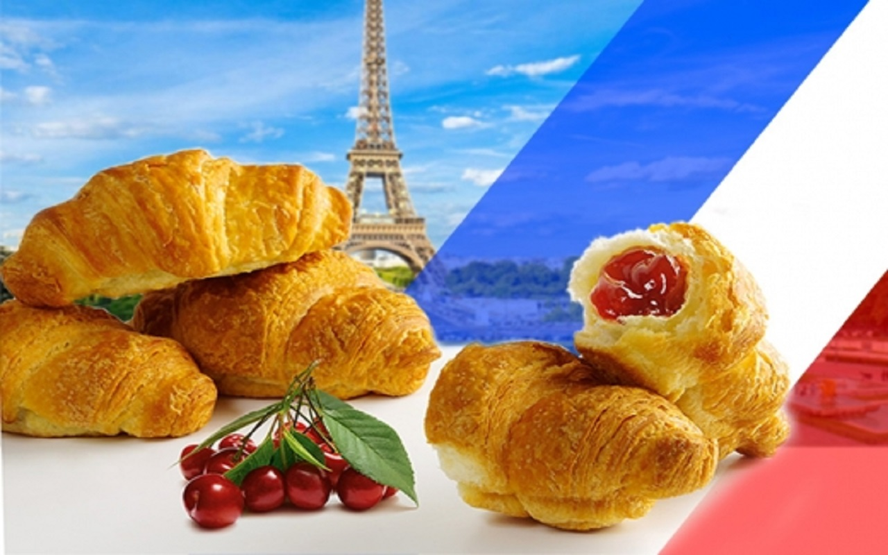

Франція – це одна з найбільших та найвпливовіших країн Європи. Вона відома своєю багатою історією, культурою, модою, кухнею та вином.
Французька культура багата й різноманітна. Вона відома своєю літературою (Мольєр, Вольтер), філософією (Декарт), кіно (Трюффо, Годар), мистецтвом (Моне, Ренуар) та кухнею (сири, вино, круасани).
